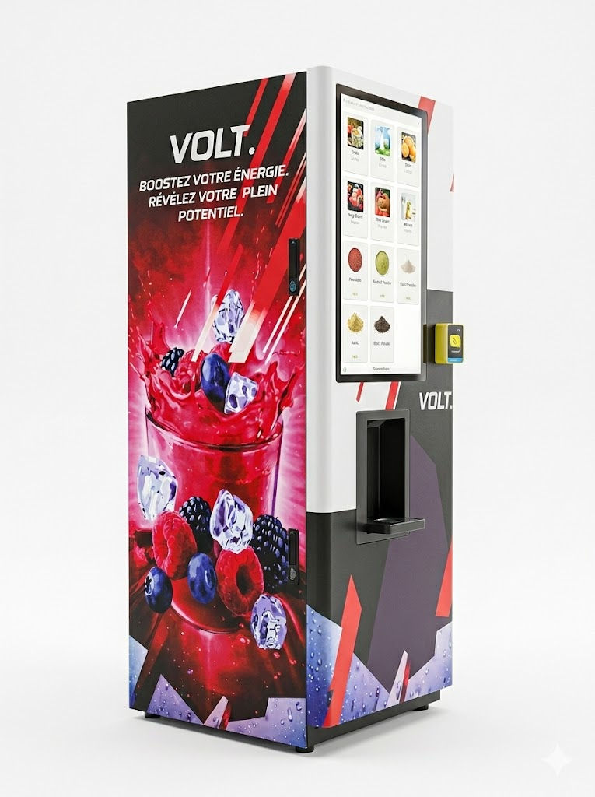

Disponible à Lausanne · Canton de Vaud
Distributeur de boissons connecté pour votre salle de fitness à Lausanne
Lausanne, capitale olympique mondiale — équipez votre salle de sport avec VOLT. et offrez à vos membres une hydratation fonctionnelle à la hauteur de la ville du sport, sans aucun frais d'installation.
0 CHF
Installation
9 sec
Par boisson
100%
Clé en main
Lausanne · Canton de Vaud
POURQUOI LES FITNESS
LAUSANNOIS CHOISISSENT VOLT.
Capitale olympique mondiale, Lausanne concentre une communauté sportive parmi les plus exigeantes de Suisse — triathlètes, coureurs, étudiants de l'UNIL et de l'EPFL, pratiquants de salle réguliers. Vos membres attendent des services à la hauteur de leur investissement sportif.
- Service disponible à Lausanne et dans tout le canton de Vaud
- Installation et maintenance assurées par VOLT. — sans démarche de votre part
- Revenu mensuel récurrent sans investissement ni stock à gérer
- Boissons adaptées aux sportifs d'endurance et de force

Questions fréquentes — Lausanne
TOUT CE QU'IL FAUT SAVOIR
POUR LAUSANNE
ÉQUIPEZ VOTRE FITNESS
LAUSANNOIS
Installation gratuite, revenu récurrent, membres fidélisés. Devis personnalisé pour votre club à Lausanne ou dans le canton de Vaud.
Demander une offre →